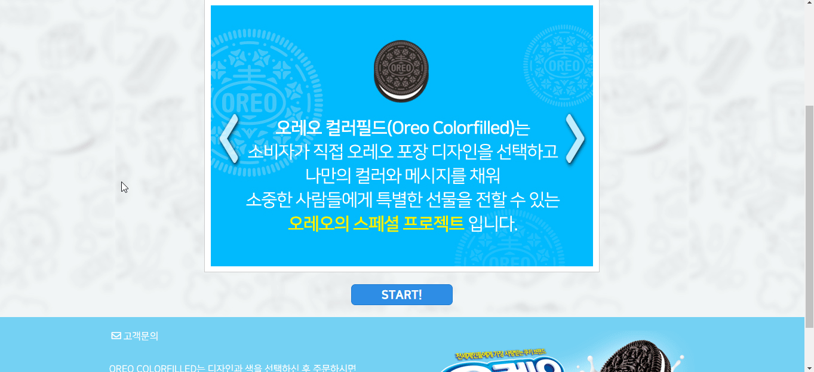

대다수의 대화 상자 구현 방식
- 버튼을 누른다
- 팝업이 열린다.
- 닫기 버튼을 누른다.
- 팝업이 닫힌다.

문제점
시각적으로 모든 동작이 명확하고 마우스 또는 터치 사용자가 대화 상자와 완벽하게 상호 작용할 수 있지만 키보드 사용자 및 보조 기술 사용자는 큰 장벽에 직면 할 수 있습니다.
대화 상자 열린다는 정보 인지 불가
7.2 예측 가능성
7.2.1. (사용자 요구에 따른 실행) 사용자가 의도하지 않은 기능(새 창, 초점에 의한 맥락 변화 등)은 실행되지 않아야 한다.
컨트롤이나 사용자 입력은 초점을 받았을 때에 의도하지 않는 기능이 자동적으로 실행 되지 않도록 콘텐츠를 개발해야 한다. 즉, 컨트롤이나 사용자 입력의 기능은 사용자의 마우스 클릭이나 키보드 조작에 의하여 실행되어야 한다. 특히 사용자가 인지하지 못한 상황에서 새 창, 팝업 창 등이 열리지 않아야 한다.
마크업 위치에 따라 문서 탐색 시 링크(버튼)에 이어서 해당 대화 상자로 이동 되지 않음
7.3. 콘텐츠의 논리성
7.3.1. (콘텐츠의 선형 구조) 콘텐츠는 논리적인 순서로 제공해야 한다.
콘텐츠는 보조 기술 사용자가 맥락을 이해할 수 있도록 논리적인 순서로 제공해야 한다.
대화 상자를 벗어나 배경 페이지로 초점 이동
6.1. 입력장치 접근성
6.1.2. (초점 이동) 키보드에 의한 초점은 논리적으로 이동해야 하며, 시각적으로 구별할 수 있어야 한다.
웹 페이지에서 제공하는 모든 기능을 키보드만으로 사용하는 경우에도 사용자 입력 간 의 초점 이동은 적절한 순서를 따라야 하며, 이 과정에서 콘텐츠는 조작이 불가능한 상태가 되거나 갑작스러운 페이지의 전환 등이 일어나지 않아야 한다.
대화 상자를 벗어나 배경 페이지로 이어지는 스크린리더 문서 탐색
상동(上同)
과거의 접근성 해결 방법
링크(버튼)에 title 속성(attribute)을 이용하여 추가 정보 제공
<a href="#voc-dialog" title="레이어 팝업">고객문의</a>초점이 대화 상자 내부로 이동 된 후 초점 이동을 대화 상자 내부를 순환하도록 가두기
가급적 대화 상자의 마크업을 링크(버튼) 바로 이후로 위치
여전히 해결되지 않는 문제
- title 속성(attribute) 값은 스크린리더 설정에 따라 읽지 않을 수 있음
- 대화 상자를 벗어나 배경 페이지로 이어지는 스크린리더 문서 탐색
- 대화 상자의 마크업을 링크(버튼) 바로 이후로 위치시키기 어려운 상황 발생